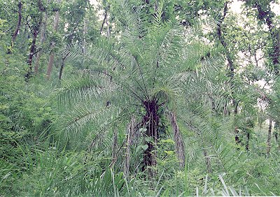
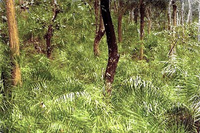

|
ECONOMICALLY
IMPORTANT PLANTS OF INDIA |
| Under-utilized Food and Fodder species and their wild relatives | Contributed by Ms.M.L Annapurna And Dr. Dhanapal, UAS, Bangalore |
Phoenix humilis Royle


This can be seen in the gardens Ghats, open forest,
open places near roads, wastelands & gardens, Sandstone hills, Undergrowth
forests and waste land.
BioticZone: Himalaya and Malabar.
Availability :
Misc: Corbett National Park, Katghora, Khongsnong - Raliang, Korba to Kudmura,
Nigol valley and Reeserve forest.,
Country: Burma, China, Cochinchina and India.
Zone: Central, North, North East, South and West.
State: Bihar, Karnataka, Madhya Pradesh, Maharashtra, Meghalaya, Rajasthan and
Uttar Pradesh.
District: Bilaspur, Chamoli, Champaran, Chandrapur, Hoshangabad, Jowai, and
Uttar Kannada,
Taluk: Pachmarhi.
Indian Varieties:
Three Indian varieties of this palm have been recognized, which are generally
not discriminated in their economic uses ; some authors consider them as distinct
species.
1. Var. humilis (HINDI- Khajuri; KUMAN-Thankal) is common in the Himalayas,
Assam and Northern and Central India
2. var. pedunculata Becc. (MAR-Shewra, shilind; TE.L-Kondita; TAM.-Inji,
malai-icham; KAN.-Sun-ichil; ORIYA-Bukhorjuro, kojiri) is distributed chiefly -in the hills
of the Deccan Peninsula
3. var. loureirii (Kunth) Becc. syn. P. pusilla Lour., non Gaertn. in Khasi
hills and Manipur, and is a good pot plant.
Status :
DIAGNOSTIC
FEATURES
Leaves sub-glaucous: pinnae scattered, interruptedly
fascicled; fruiting spadix slender, spreading; fruit oblong, c. 1.25 cm. long,
pericarp thin.
REPRODUCTIVE BIOLOGY
Breeding System :
Phenology :
The flowering occurs during October -February and
fruiting occurs during March-June.
Pollinators:
Seed Biology :
Seed Germination:
Cultivation
Pests:
Diseases:
Parts used
Fruits , Pith , Leaves,
Harvesting Practices
Produce and Products
Mats, Baskets, Fancy handbags